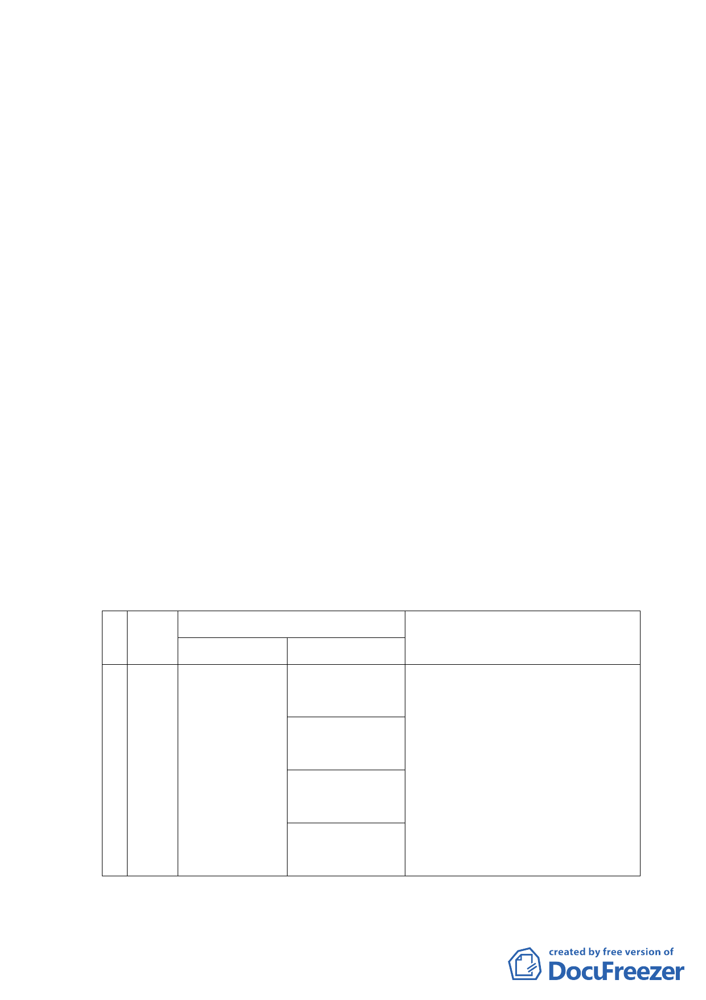

地區生活環境品質。
（三）本計畫區位於北投區西隅之關渡科技工業區內，鄰近關渡
捷運站，土地現況無工廠營運，原土地所有權人擬發展媒
體科技園區，後為響應中央推動文化創意及高科技產業之
發展，響應前述通檢計畫以捷運站核心發展政策，及因應
關渡工業區轉型之趨勢，故申請變更為商業區，並合理捐
贈回饋公共設施，改善地區環境品質；以「綠能、人文、
科技&數位內容」為發展主軸，引進科技企業總部、休閒
旅館、人文空間，創造兼具商務、休閒多功能服務特區，
使其成為周邊居民各項生活之聚集節點，進而落實土地實
質發展效益及利用合理性。
（四）申請單位依都市計畫法第 27 條第 1 項第 3 款規定辦理本
都市計畫變更部分科技工業區為商業區、公園用地、道路
用地及綠地用地，併依都市計畫法第 24 條擬定細部計畫。
三、計畫內容概述：
（一）主要計畫：
1.變更計畫內容：（土地使用分區）
編
位置
號
變更內容
原計畫
新計畫
變更理由
大度
商業區
1. 符合上位計畫指導及都市計畫規定
路三
（26,886.71m2）
工業區檢討原則。
段以
公園用地
2. 因應文創與科技產業發展需求，透
北，立
過轉型提供科技服務機能，使土地
1 功街
工業區
（6,501.21m2）
利用更多元化。
以 （38,408.82m2） 綠地用地 3. 區位條件良好，符合都市發展趨勢
東，立
（851.39m2）
及經濟發展需要。
德路
以西
道路用地
（4170.05m2）
4. 透過整體開發，提供必要性公共設
施，改善地區生活環境品質。
-9-